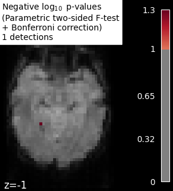
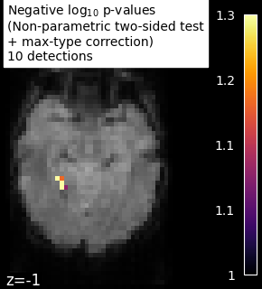

Note
Click here to download the full example code or to run this example in your browser via Binder
9.8.9. Massively univariate analysis of face vs house recognition¶
A permuted Ordinary Least Squares algorithm is run at each voxel in order to determine whether or not it behaves differently under a “face viewing” condition and a “house viewing” condition. We consider the mean image per session and per condition. Otherwise, the observations cannot be exchanged at random because a time dependence exists between observations within a same session (see [1] for more detailed explanations).
The example shows the small differences that exist between Bonferroni-corrected p-values and family-wise corrected p-values obtained from a permutation test combined with a max-type procedure [2]. Bonferroni correction is a bit conservative, as revealed by the presence of a few false negative.
9.8.9.1. References¶
- [1] Winkler, A. M. et al. (2014).
Permutation inference for the general linear model. Neuroimage.
- [2] Anderson, M. J. & Robinson, J. (2001).
Permutation tests for linear models. Australian & New Zealand Journal of Statistics, 43(1), 75-88. (http://avesbiodiv.mncn.csic.es/estadistica/permut2.pdf)
# Author: Virgile Fritsch, <virgile.fritsch@inria.fr>, Feb. 2014
Load Haxby dataset
from nilearn import datasets, image
haxby_dataset = datasets.fetch_haxby(subjects=[2])
# print basic information on the dataset
print('Mask nifti image (3D) is located at: %s' % haxby_dataset.mask)
print('Functional nifti image (4D) is located at: %s' % haxby_dataset.func[0])
Out:
Mask nifti image (3D) is located at: /home/circleci/nilearn_data/haxby2001/mask.nii.gz
Functional nifti image (4D) is located at: /home/circleci/nilearn_data/haxby2001/subj2/bold.nii.gz
Restrict to faces and houses
import numpy as np
import pandas as pd
labels = pd.read_csv(haxby_dataset.session_target[0], sep=" ")
conditions = labels['labels']
categories = conditions.unique()
conditions_encoded = np.zeros_like(conditions)
for c, category in enumerate(categories):
conditions_encoded[conditions == category] = c
sessions = labels['chunks']
condition_mask = conditions.isin(['face', 'house'])
conditions_encoded = conditions_encoded[condition_mask]
Mask data
mask_filename = haxby_dataset.mask
from nilearn.image import index_img
from nilearn.input_data import NiftiMasker
nifti_masker = NiftiMasker(
smoothing_fwhm=8,
mask_img=mask_filename,
memory='nilearn_cache', memory_level=1) # cache options
func_filename = haxby_dataset.func[0]
func_reduced = index_img(func_filename,
condition_mask)
fmri_masked = nifti_masker.fit_transform(func_reduced)
# We consider the mean image per session and per condition.
# Otherwise, the observations cannot be exchanged at random because
# a time dependence exists between observations within a same session.
n_sessions = np.unique(sessions).size
grouped_fmri_masked = np.empty((2 * n_sessions, # two conditions per session
fmri_masked.shape[1]))
grouped_conditions_encoded = np.empty((2 * n_sessions, 1))
for s in range(n_sessions):
session_mask = sessions[condition_mask] == s
session_house_mask = np.logical_and(session_mask,
conditions[condition_mask] == 'house')
session_face_mask = np.logical_and(session_mask,
conditions[condition_mask] == 'face')
grouped_fmri_masked[2 * s] = fmri_masked[session_house_mask].mean(0)
grouped_fmri_masked[2 * s + 1] = fmri_masked[session_face_mask].mean(0)
grouped_conditions_encoded[2 * s] = conditions_encoded[
session_house_mask][0]
grouped_conditions_encoded[2 * s + 1] = conditions_encoded[
session_face_mask][0]
Perform massively univariate analysis with permuted OLS
We use a two-sided t-test to compute p-values, but we keep trace of the effect sign to add it back at the end and thus observe the signed effect
from nilearn.mass_univariate import permuted_ols
neg_log_pvals, t_scores_original_data, _ = permuted_ols(
grouped_conditions_encoded, grouped_fmri_masked,
# + intercept as a covariate by default
n_perm=10000, two_sided_test=True,
verbose=1, # display progress bar
n_jobs=1) # can be changed to use more CPUs
signed_neg_log_pvals = neg_log_pvals * np.sign(t_scores_original_data)
signed_neg_log_pvals_unmasked = nifti_masker.inverse_transform(
signed_neg_log_pvals)
Out:
[Parallel(n_jobs=1)]: Using backend SequentialBackend with 1 concurrent workers.
Job #1, processed 0/10000 permutations (0.00%, 28 seconds remaining)
Job #1, processed 10/10000 permutations (0.10%, 17 seconds remaining)
Job #1, processed 20/10000 permutations (0.20%, 15 seconds remaining)
Job #1, processed 30/10000 permutations (0.30%, 15 seconds remaining)
Job #1, processed 40/10000 permutations (0.40%, 15 seconds remaining)
Job #1, processed 50/10000 permutations (0.50%, 14 seconds remaining)
Job #1, processed 60/10000 permutations (0.60%, 14 seconds remaining)
Job #1, processed 70/10000 permutations (0.70%, 14 seconds remaining)
Job #1, processed 80/10000 permutations (0.80%, 14 seconds remaining)
Job #1, processed 90/10000 permutations (0.90%, 14 seconds remaining)
Job #1, processed 100/10000 permutations (1.00%, 14 seconds remaining)
Job #1, processed 110/10000 permutations (1.10%, 14 seconds remaining)
Job #1, processed 120/10000 permutations (1.20%, 14 seconds remaining)
Job #1, processed 130/10000 permutations (1.30%, 14 seconds remaining)
Job #1, processed 140/10000 permutations (1.40%, 14 seconds remaining)
Job #1, processed 150/10000 permutations (1.50%, 14 seconds remaining)
Job #1, processed 160/10000 permutations (1.60%, 14 seconds remaining)
Job #1, processed 170/10000 permutations (1.70%, 14 seconds remaining)
Job #1, processed 180/10000 permutations (1.80%, 14 seconds remaining)
Job #1, processed 190/10000 permutations (1.90%, 14 seconds remaining)
Job #1, processed 200/10000 permutations (2.00%, 14 seconds remaining)
Job #1, processed 210/10000 permutations (2.10%, 14 seconds remaining)
Job #1, processed 220/10000 permutations (2.20%, 14 seconds remaining)
Job #1, processed 230/10000 permutations (2.30%, 14 seconds remaining)
Job #1, processed 240/10000 permutations (2.40%, 13 seconds remaining)
Job #1, processed 250/10000 permutations (2.50%, 13 seconds remaining)
Job #1, processed 260/10000 permutations (2.60%, 13 seconds remaining)
Job #1, processed 270/10000 permutations (2.70%, 13 seconds remaining)
Job #1, processed 280/10000 permutations (2.80%, 13 seconds remaining)
Job #1, processed 290/10000 permutations (2.90%, 13 seconds remaining)
Job #1, processed 300/10000 permutations (3.00%, 13 seconds remaining)
Job #1, processed 310/10000 permutations (3.10%, 13 seconds remaining)
Job #1, processed 320/10000 permutations (3.20%, 13 seconds remaining)
Job #1, processed 330/10000 permutations (3.30%, 13 seconds remaining)
Job #1, processed 340/10000 permutations (3.40%, 13 seconds remaining)
Job #1, processed 350/10000 permutations (3.50%, 13 seconds remaining)
Job #1, processed 360/10000 permutations (3.60%, 13 seconds remaining)
Job #1, processed 370/10000 permutations (3.70%, 13 seconds remaining)
Job #1, processed 380/10000 permutations (3.80%, 13 seconds remaining)
Job #1, processed 390/10000 permutations (3.90%, 13 seconds remaining)
Job #1, processed 400/10000 permutations (4.00%, 13 seconds remaining)
Job #1, processed 410/10000 permutations (4.10%, 13 seconds remaining)
Job #1, processed 420/10000 permutations (4.20%, 13 seconds remaining)
Job #1, processed 430/10000 permutations (4.30%, 13 seconds remaining)
Job #1, processed 440/10000 permutations (4.40%, 13 seconds remaining)
Job #1, processed 450/10000 permutations (4.50%, 13 seconds remaining)
Job #1, processed 460/10000 permutations (4.60%, 13 seconds remaining)
Job #1, processed 470/10000 permutations (4.70%, 13 seconds remaining)
Job #1, processed 480/10000 permutations (4.80%, 13 seconds remaining)
Job #1, processed 490/10000 permutations (4.90%, 13 seconds remaining)
Job #1, processed 500/10000 permutations (5.00%, 13 seconds remaining)
Job #1, processed 510/10000 permutations (5.10%, 13 seconds remaining)
Job #1, processed 520/10000 permutations (5.20%, 13 seconds remaining)
Job #1, processed 530/10000 permutations (5.30%, 13 seconds remaining)
Job #1, processed 540/10000 permutations (5.40%, 13 seconds remaining)
Job #1, processed 550/10000 permutations (5.50%, 13 seconds remaining)
Job #1, processed 560/10000 permutations (5.60%, 13 seconds remaining)
Job #1, processed 570/10000 permutations (5.70%, 13 seconds remaining)
Job #1, processed 580/10000 permutations (5.80%, 13 seconds remaining)
Job #1, processed 590/10000 permutations (5.90%, 13 seconds remaining)
Job #1, processed 600/10000 permutations (6.00%, 13 seconds remaining)
Job #1, processed 610/10000 permutations (6.10%, 13 seconds remaining)
Job #1, processed 620/10000 permutations (6.20%, 13 seconds remaining)
Job #1, processed 630/10000 permutations (6.30%, 13 seconds remaining)
Job #1, processed 640/10000 permutations (6.40%, 13 seconds remaining)
Job #1, processed 650/10000 permutations (6.50%, 13 seconds remaining)
Job #1, processed 660/10000 permutations (6.60%, 13 seconds remaining)
Job #1, processed 670/10000 permutations (6.70%, 13 seconds remaining)
Job #1, processed 680/10000 permutations (6.80%, 13 seconds remaining)
Job #1, processed 690/10000 permutations (6.90%, 13 seconds remaining)
Job #1, processed 700/10000 permutations (7.00%, 13 seconds remaining)
Job #1, processed 710/10000 permutations (7.10%, 13 seconds remaining)
Job #1, processed 720/10000 permutations (7.20%, 13 seconds remaining)
Job #1, processed 730/10000 permutations (7.30%, 13 seconds remaining)
Job #1, processed 740/10000 permutations (7.40%, 13 seconds remaining)
Job #1, processed 750/10000 permutations (7.50%, 13 seconds remaining)
Job #1, processed 760/10000 permutations (7.60%, 13 seconds remaining)
Job #1, processed 770/10000 permutations (7.70%, 13 seconds remaining)
Job #1, processed 780/10000 permutations (7.80%, 13 seconds remaining)
Job #1, processed 790/10000 permutations (7.90%, 13 seconds remaining)
Job #1, processed 800/10000 permutations (8.00%, 13 seconds remaining)
Job #1, processed 810/10000 permutations (8.10%, 13 seconds remaining)
Job #1, processed 820/10000 permutations (8.20%, 13 seconds remaining)
Job #1, processed 830/10000 permutations (8.30%, 13 seconds remaining)
Job #1, processed 840/10000 permutations (8.40%, 13 seconds remaining)
Job #1, processed 850/10000 permutations (8.50%, 13 seconds remaining)
Job #1, processed 860/10000 permutations (8.60%, 13 seconds remaining)
Job #1, processed 870/10000 permutations (8.70%, 13 seconds remaining)
Job #1, processed 880/10000 permutations (8.80%, 13 seconds remaining)
Job #1, processed 890/10000 permutations (8.90%, 13 seconds remaining)
Job #1, processed 900/10000 permutations (9.00%, 13 seconds remaining)
Job #1, processed 910/10000 permutations (9.10%, 12 seconds remaining)
Job #1, processed 920/10000 permutations (9.20%, 12 seconds remaining)
Job #1, processed 930/10000 permutations (9.30%, 12 seconds remaining)
Job #1, processed 940/10000 permutations (9.40%, 12 seconds remaining)
Job #1, processed 950/10000 permutations (9.50%, 12 seconds remaining)
Job #1, processed 960/10000 permutations (9.60%, 12 seconds remaining)
Job #1, processed 970/10000 permutations (9.70%, 12 seconds remaining)
Job #1, processed 980/10000 permutations (9.80%, 12 seconds remaining)
Job #1, processed 990/10000 permutations (9.90%, 12 seconds remaining)
Job #1, processed 1000/10000 permutations (10.00%, 12 seconds remaining)
Job #1, processed 1010/10000 permutations (10.10%, 12 seconds remaining)
Job #1, processed 1020/10000 permutations (10.20%, 12 seconds remaining)
Job #1, processed 1030/10000 permutations (10.30%, 12 seconds remaining)
Job #1, processed 1040/10000 permutations (10.40%, 12 seconds remaining)
Job #1, processed 1050/10000 permutations (10.50%, 12 seconds remaining)
Job #1, processed 1060/10000 permutations (10.60%, 12 seconds remaining)
Job #1, processed 1070/10000 permutations (10.70%, 12 seconds remaining)
Job #1, processed 1080/10000 permutations (10.80%, 12 seconds remaining)
Job #1, processed 1090/10000 permutations (10.90%, 12 seconds remaining)
Job #1, processed 1100/10000 permutations (11.00%, 12 seconds remaining)
Job #1, processed 1110/10000 permutations (11.10%, 12 seconds remaining)
Job #1, processed 1120/10000 permutations (11.20%, 12 seconds remaining)
Job #1, processed 1130/10000 permutations (11.30%, 12 seconds remaining)
Job #1, processed 1140/10000 permutations (11.40%, 12 seconds remaining)
Job #1, processed 1150/10000 permutations (11.50%, 12 seconds remaining)
Job #1, processed 1160/10000 permutations (11.60%, 12 seconds remaining)
Job #1, processed 1170/10000 permutations (11.70%, 12 seconds remaining)
Job #1, processed 1180/10000 permutations (11.80%, 12 seconds remaining)
Job #1, processed 1190/10000 permutations (11.90%, 12 seconds remaining)
Job #1, processed 1200/10000 permutations (12.00%, 12 seconds remaining)
Job #1, processed 1210/10000 permutations (12.10%, 12 seconds remaining)
Job #1, processed 1220/10000 permutations (12.20%, 12 seconds remaining)
Job #1, processed 1230/10000 permutations (12.30%, 12 seconds remaining)
Job #1, processed 1240/10000 permutations (12.40%, 12 seconds remaining)
Job #1, processed 1250/10000 permutations (12.50%, 12 seconds remaining)
Job #1, processed 1260/10000 permutations (12.60%, 12 seconds remaining)
Job #1, processed 1270/10000 permutations (12.70%, 12 seconds remaining)
Job #1, processed 1280/10000 permutations (12.80%, 12 seconds remaining)
Job #1, processed 1290/10000 permutations (12.90%, 12 seconds remaining)
Job #1, processed 1300/10000 permutations (13.00%, 12 seconds remaining)
Job #1, processed 1310/10000 permutations (13.10%, 12 seconds remaining)
Job #1, processed 1320/10000 permutations (13.20%, 12 seconds remaining)
Job #1, processed 1330/10000 permutations (13.30%, 12 seconds remaining)
Job #1, processed 1340/10000 permutations (13.40%, 12 seconds remaining)
Job #1, processed 1350/10000 permutations (13.50%, 12 seconds remaining)
Job #1, processed 1360/10000 permutations (13.60%, 12 seconds remaining)
Job #1, processed 1370/10000 permutations (13.70%, 12 seconds remaining)
Job #1, processed 1380/10000 permutations (13.80%, 12 seconds remaining)
Job #1, processed 1390/10000 permutations (13.90%, 12 seconds remaining)
Job #1, processed 1400/10000 permutations (14.00%, 12 seconds remaining)
Job #1, processed 1410/10000 permutations (14.10%, 12 seconds remaining)
Job #1, processed 1420/10000 permutations (14.20%, 12 seconds remaining)
Job #1, processed 1430/10000 permutations (14.30%, 12 seconds remaining)
Job #1, processed 1440/10000 permutations (14.40%, 12 seconds remaining)
Job #1, processed 1450/10000 permutations (14.50%, 12 seconds remaining)
Job #1, processed 1460/10000 permutations (14.60%, 12 seconds remaining)
Job #1, processed 1470/10000 permutations (14.70%, 12 seconds remaining)
Job #1, processed 1480/10000 permutations (14.80%, 12 seconds remaining)
Job #1, processed 1490/10000 permutations (14.90%, 12 seconds remaining)
Job #1, processed 1500/10000 permutations (15.00%, 12 seconds remaining)
Job #1, processed 1510/10000 permutations (15.10%, 12 seconds remaining)
Job #1, processed 1520/10000 permutations (15.20%, 12 seconds remaining)
Job #1, processed 1530/10000 permutations (15.30%, 12 seconds remaining)
Job #1, processed 1540/10000 permutations (15.40%, 12 seconds remaining)
Job #1, processed 1550/10000 permutations (15.50%, 12 seconds remaining)
Job #1, processed 1560/10000 permutations (15.60%, 12 seconds remaining)
Job #1, processed 1570/10000 permutations (15.70%, 12 seconds remaining)
Job #1, processed 1580/10000 permutations (15.80%, 12 seconds remaining)
Job #1, processed 1590/10000 permutations (15.90%, 12 seconds remaining)
Job #1, processed 1600/10000 permutations (16.00%, 11 seconds remaining)
Job #1, processed 1610/10000 permutations (16.10%, 11 seconds remaining)
Job #1, processed 1620/10000 permutations (16.20%, 11 seconds remaining)
Job #1, processed 1630/10000 permutations (16.30%, 11 seconds remaining)
Job #1, processed 1640/10000 permutations (16.40%, 11 seconds remaining)
Job #1, processed 1650/10000 permutations (16.50%, 11 seconds remaining)
Job #1, processed 1660/10000 permutations (16.60%, 11 seconds remaining)
Job #1, processed 1670/10000 permutations (16.70%, 11 seconds remaining)
Job #1, processed 1680/10000 permutations (16.80%, 11 seconds remaining)
Job #1, processed 1690/10000 permutations (16.90%, 11 seconds remaining)
Job #1, processed 1700/10000 permutations (17.00%, 11 seconds remaining)
Job #1, processed 1710/10000 permutations (17.10%, 11 seconds remaining)
Job #1, processed 1720/10000 permutations (17.20%, 11 seconds remaining)
Job #1, processed 1730/10000 permutations (17.30%, 11 seconds remaining)
Job #1, processed 1740/10000 permutations (17.40%, 11 seconds remaining)
Job #1, processed 1750/10000 permutations (17.50%, 11 seconds remaining)
Job #1, processed 1760/10000 permutations (17.60%, 11 seconds remaining)
Job #1, processed 1770/10000 permutations (17.70%, 11 seconds remaining)
Job #1, processed 1780/10000 permutations (17.80%, 11 seconds remaining)
Job #1, processed 1790/10000 permutations (17.90%, 11 seconds remaining)
Job #1, processed 1800/10000 permutations (18.00%, 11 seconds remaining)
Job #1, processed 1810/10000 permutations (18.10%, 11 seconds remaining)
Job #1, processed 1820/10000 permutations (18.20%, 11 seconds remaining)
Job #1, processed 1830/10000 permutations (18.30%, 11 seconds remaining)
Job #1, processed 1840/10000 permutations (18.40%, 11 seconds remaining)
Job #1, processed 1850/10000 permutations (18.50%, 11 seconds remaining)
Job #1, processed 1860/10000 permutations (18.60%, 11 seconds remaining)
Job #1, processed 1870/10000 permutations (18.70%, 11 seconds remaining)
Job #1, processed 1880/10000 permutations (18.80%, 11 seconds remaining)
Job #1, processed 1890/10000 permutations (18.90%, 11 seconds remaining)
Job #1, processed 1900/10000 permutations (19.00%, 11 seconds remaining)
Job #1, processed 1910/10000 permutations (19.10%, 11 seconds remaining)
Job #1, processed 1920/10000 permutations (19.20%, 11 seconds remaining)
Job #1, processed 1930/10000 permutations (19.30%, 11 seconds remaining)
Job #1, processed 1940/10000 permutations (19.40%, 11 seconds remaining)
Job #1, processed 1950/10000 permutations (19.50%, 11 seconds remaining)
Job #1, processed 1960/10000 permutations (19.60%, 11 seconds remaining)
Job #1, processed 1970/10000 permutations (19.70%, 11 seconds remaining)
Job #1, processed 1980/10000 permutations (19.80%, 11 seconds remaining)
Job #1, processed 1990/10000 permutations (19.90%, 11 seconds remaining)
Job #1, processed 2000/10000 permutations (20.00%, 11 seconds remaining)
Job #1, processed 2010/10000 permutations (20.10%, 11 seconds remaining)
Job #1, processed 2020/10000 permutations (20.20%, 11 seconds remaining)
Job #1, processed 2030/10000 permutations (20.30%, 11 seconds remaining)
Job #1, processed 2040/10000 permutations (20.40%, 11 seconds remaining)
Job #1, processed 2050/10000 permutations (20.50%, 11 seconds remaining)
Job #1, processed 2060/10000 permutations (20.60%, 11 seconds remaining)
Job #1, processed 2070/10000 permutations (20.70%, 11 seconds remaining)
Job #1, processed 2080/10000 permutations (20.80%, 11 seconds remaining)
Job #1, processed 2090/10000 permutations (20.90%, 11 seconds remaining)
Job #1, processed 2100/10000 permutations (21.00%, 11 seconds remaining)
Job #1, processed 2110/10000 permutations (21.10%, 11 seconds remaining)
Job #1, processed 2120/10000 permutations (21.20%, 11 seconds remaining)
Job #1, processed 2130/10000 permutations (21.30%, 11 seconds remaining)
Job #1, processed 2140/10000 permutations (21.40%, 11 seconds remaining)
Job #1, processed 2150/10000 permutations (21.50%, 11 seconds remaining)
Job #1, processed 2160/10000 permutations (21.60%, 11 seconds remaining)
Job #1, processed 2170/10000 permutations (21.70%, 11 seconds remaining)
Job #1, processed 2180/10000 permutations (21.80%, 11 seconds remaining)
Job #1, processed 2190/10000 permutations (21.90%, 11 seconds remaining)
Job #1, processed 2200/10000 permutations (22.00%, 11 seconds remaining)
Job #1, processed 2210/10000 permutations (22.10%, 11 seconds remaining)
Job #1, processed 2220/10000 permutations (22.20%, 11 seconds remaining)
Job #1, processed 2230/10000 permutations (22.30%, 11 seconds remaining)
Job #1, processed 2240/10000 permutations (22.40%, 11 seconds remaining)
Job #1, processed 2250/10000 permutations (22.50%, 11 seconds remaining)
Job #1, processed 2260/10000 permutations (22.60%, 11 seconds remaining)
Job #1, processed 2270/10000 permutations (22.70%, 10 seconds remaining)
Job #1, processed 2280/10000 permutations (22.80%, 10 seconds remaining)
Job #1, processed 2290/10000 permutations (22.90%, 10 seconds remaining)
Job #1, processed 2300/10000 permutations (23.00%, 10 seconds remaining)
Job #1, processed 2310/10000 permutations (23.10%, 10 seconds remaining)
Job #1, processed 2320/10000 permutations (23.20%, 10 seconds remaining)
Job #1, processed 2330/10000 permutations (23.30%, 10 seconds remaining)
Job #1, processed 2340/10000 permutations (23.40%, 10 seconds remaining)
Job #1, processed 2350/10000 permutations (23.50%, 10 seconds remaining)
Job #1, processed 2360/10000 permutations (23.60%, 10 seconds remaining)
Job #1, processed 2370/10000 permutations (23.70%, 10 seconds remaining)
Job #1, processed 2380/10000 permutations (23.80%, 10 seconds remaining)
Job #1, processed 2390/10000 permutations (23.90%, 10 seconds remaining)
Job #1, processed 2400/10000 permutations (24.00%, 10 seconds remaining)
Job #1, processed 2410/10000 permutations (24.10%, 10 seconds remaining)
Job #1, processed 2420/10000 permutations (24.20%, 10 seconds remaining)
Job #1, processed 2430/10000 permutations (24.30%, 10 seconds remaining)
Job #1, processed 2440/10000 permutations (24.40%, 10 seconds remaining)
Job #1, processed 2450/10000 permutations (24.50%, 10 seconds remaining)
Job #1, processed 2460/10000 permutations (24.60%, 10 seconds remaining)
Job #1, processed 2470/10000 permutations (24.70%, 10 seconds remaining)
Job #1, processed 2480/10000 permutations (24.80%, 10 seconds remaining)
Job #1, processed 2490/10000 permutations (24.90%, 10 seconds remaining)
Job #1, processed 2500/10000 permutations (25.00%, 10 seconds remaining)
Job #1, processed 2510/10000 permutations (25.10%, 10 seconds remaining)
Job #1, processed 2520/10000 permutations (25.20%, 10 seconds remaining)
Job #1, processed 2530/10000 permutations (25.30%, 10 seconds remaining)
Job #1, processed 2540/10000 permutations (25.40%, 10 seconds remaining)
Job #1, processed 2550/10000 permutations (25.50%, 10 seconds remaining)
Job #1, processed 2560/10000 permutations (25.60%, 10 seconds remaining)
Job #1, processed 2570/10000 permutations (25.70%, 10 seconds remaining)
Job #1, processed 2580/10000 permutations (25.80%, 10 seconds remaining)
Job #1, processed 2590/10000 permutations (25.90%, 10 seconds remaining)
Job #1, processed 2600/10000 permutations (26.00%, 10 seconds remaining)
Job #1, processed 2610/10000 permutations (26.10%, 10 seconds remaining)
Job #1, processed 2620/10000 permutations (26.20%, 10 seconds remaining)
Job #1, processed 2630/10000 permutations (26.30%, 10 seconds remaining)
Job #1, processed 2640/10000 permutations (26.40%, 10 seconds remaining)
Job #1, processed 2650/10000 permutations (26.50%, 10 seconds remaining)
Job #1, processed 2660/10000 permutations (26.60%, 10 seconds remaining)
Job #1, processed 2670/10000 permutations (26.70%, 10 seconds remaining)
Job #1, processed 2680/10000 permutations (26.80%, 10 seconds remaining)
Job #1, processed 2690/10000 permutations (26.90%, 10 seconds remaining)
Job #1, processed 2700/10000 permutations (27.00%, 10 seconds remaining)
Job #1, processed 2710/10000 permutations (27.10%, 10 seconds remaining)
Job #1, processed 2720/10000 permutations (27.20%, 10 seconds remaining)
Job #1, processed 2730/10000 permutations (27.30%, 10 seconds remaining)
Job #1, processed 2740/10000 permutations (27.40%, 10 seconds remaining)
Job #1, processed 2750/10000 permutations (27.50%, 10 seconds remaining)
Job #1, processed 2760/10000 permutations (27.60%, 10 seconds remaining)
Job #1, processed 2770/10000 permutations (27.70%, 10 seconds remaining)
Job #1, processed 2780/10000 permutations (27.80%, 10 seconds remaining)
Job #1, processed 2790/10000 permutations (27.90%, 10 seconds remaining)
Job #1, processed 2800/10000 permutations (28.00%, 10 seconds remaining)
Job #1, processed 2810/10000 permutations (28.10%, 10 seconds remaining)
Job #1, processed 2820/10000 permutations (28.20%, 10 seconds remaining)
Job #1, processed 2830/10000 permutations (28.30%, 10 seconds remaining)
Job #1, processed 2840/10000 permutations (28.40%, 10 seconds remaining)
Job #1, processed 2850/10000 permutations (28.50%, 10 seconds remaining)
Job #1, processed 2860/10000 permutations (28.60%, 10 seconds remaining)
Job #1, processed 2870/10000 permutations (28.70%, 10 seconds remaining)
Job #1, processed 2880/10000 permutations (28.80%, 10 seconds remaining)
Job #1, processed 2890/10000 permutations (28.90%, 10 seconds remaining)
Job #1, processed 2900/10000 permutations (29.00%, 10 seconds remaining)
Job #1, processed 2910/10000 permutations (29.10%, 10 seconds remaining)
Job #1, processed 2920/10000 permutations (29.20%, 10 seconds remaining)
Job #1, processed 2930/10000 permutations (29.30%, 10 seconds remaining)
Job #1, processed 2940/10000 permutations (29.40%, 10 seconds remaining)
Job #1, processed 2950/10000 permutations (29.50%, 10 seconds remaining)
Job #1, processed 2960/10000 permutations (29.60%, 10 seconds remaining)
Job #1, processed 2970/10000 permutations (29.70%, 10 seconds remaining)
Job #1, processed 2980/10000 permutations (29.80%, 10 seconds remaining)
Job #1, processed 2990/10000 permutations (29.90%, 10 seconds remaining)
Job #1, processed 3000/10000 permutations (30.00%, 10 seconds remaining)
Job #1, processed 3010/10000 permutations (30.10%, 10 seconds remaining)
Job #1, processed 3020/10000 permutations (30.20%, 10 seconds remaining)
Job #1, processed 3030/10000 permutations (30.30%, 10 seconds remaining)
Job #1, processed 3040/10000 permutations (30.40%, 10 seconds remaining)
Job #1, processed 3050/10000 permutations (30.50%, 10 seconds remaining)
Job #1, processed 3060/10000 permutations (30.60%, 10 seconds remaining)
Job #1, processed 3070/10000 permutations (30.70%, 10 seconds remaining)
Job #1, processed 3080/10000 permutations (30.80%, 10 seconds remaining)
Job #1, processed 3090/10000 permutations (30.90%, 10 seconds remaining)
Job #1, processed 3100/10000 permutations (31.00%, 10 seconds remaining)
Job #1, processed 3110/10000 permutations (31.10%, 10 seconds remaining)
Job #1, processed 3120/10000 permutations (31.20%, 10 seconds remaining)
Job #1, processed 3130/10000 permutations (31.30%, 10 seconds remaining)
Job #1, processed 3140/10000 permutations (31.40%, 10 seconds remaining)
Job #1, processed 3150/10000 permutations (31.50%, 10 seconds remaining)
Job #1, processed 3160/10000 permutations (31.60%, 10 seconds remaining)
Job #1, processed 3170/10000 permutations (31.70%, 10 seconds remaining)
Job #1, processed 3180/10000 permutations (31.80%, 10 seconds remaining)
Job #1, processed 3190/10000 permutations (31.90%, 10 seconds remaining)
Job #1, processed 3200/10000 permutations (32.00%, 10 seconds remaining)
Job #1, processed 3210/10000 permutations (32.10%, 10 seconds remaining)
Job #1, processed 3220/10000 permutations (32.20%, 9 seconds remaining)
Job #1, processed 3230/10000 permutations (32.30%, 9 seconds remaining)
Job #1, processed 3240/10000 permutations (32.40%, 9 seconds remaining)
Job #1, processed 3250/10000 permutations (32.50%, 9 seconds remaining)
Job #1, processed 3260/10000 permutations (32.60%, 9 seconds remaining)
Job #1, processed 3270/10000 permutations (32.70%, 9 seconds remaining)
Job #1, processed 3280/10000 permutations (32.80%, 9 seconds remaining)
Job #1, processed 3290/10000 permutations (32.90%, 9 seconds remaining)
Job #1, processed 3300/10000 permutations (33.00%, 9 seconds remaining)
Job #1, processed 3310/10000 permutations (33.10%, 9 seconds remaining)
Job #1, processed 3320/10000 permutations (33.20%, 9 seconds remaining)
Job #1, processed 3330/10000 permutations (33.30%, 9 seconds remaining)
Job #1, processed 3340/10000 permutations (33.40%, 9 seconds remaining)
Job #1, processed 3350/10000 permutations (33.50%, 9 seconds remaining)
Job #1, processed 3360/10000 permutations (33.60%, 9 seconds remaining)
Job #1, processed 3370/10000 permutations (33.70%, 9 seconds remaining)
Job #1, processed 3380/10000 permutations (33.80%, 9 seconds remaining)
Job #1, processed 3390/10000 permutations (33.90%, 9 seconds remaining)
Job #1, processed 3400/10000 permutations (34.00%, 9 seconds remaining)
Job #1, processed 3410/10000 permutations (34.10%, 9 seconds remaining)
Job #1, processed 3420/10000 permutations (34.20%, 9 seconds remaining)
Job #1, processed 3430/10000 permutations (34.30%, 9 seconds remaining)
Job #1, processed 3440/10000 permutations (34.40%, 9 seconds remaining)
Job #1, processed 3450/10000 permutations (34.50%, 9 seconds remaining)
Job #1, processed 3460/10000 permutations (34.60%, 9 seconds remaining)
Job #1, processed 3470/10000 permutations (34.70%, 9 seconds remaining)
Job #1, processed 3480/10000 permutations (34.80%, 9 seconds remaining)
Job #1, processed 3490/10000 permutations (34.90%, 9 seconds remaining)
Job #1, processed 3500/10000 permutations (35.00%, 9 seconds remaining)
Job #1, processed 3510/10000 permutations (35.10%, 9 seconds remaining)
Job #1, processed 3520/10000 permutations (35.20%, 9 seconds remaining)
Job #1, processed 3530/10000 permutations (35.30%, 9 seconds remaining)
Job #1, processed 3540/10000 permutations (35.40%, 9 seconds remaining)
Job #1, processed 3550/10000 permutations (35.50%, 9 seconds remaining)
Job #1, processed 3560/10000 permutations (35.60%, 9 seconds remaining)
Job #1, processed 3570/10000 permutations (35.70%, 9 seconds remaining)
Job #1, processed 3580/10000 permutations (35.80%, 9 seconds remaining)
Job #1, processed 3590/10000 permutations (35.90%, 9 seconds remaining)
Job #1, processed 3600/10000 permutations (36.00%, 9 seconds remaining)
Job #1, processed 3610/10000 permutations (36.10%, 9 seconds remaining)
Job #1, processed 3620/10000 permutations (36.20%, 9 seconds remaining)
Job #1, processed 3630/10000 permutations (36.30%, 9 seconds remaining)
Job #1, processed 3640/10000 permutations (36.40%, 9 seconds remaining)
Job #1, processed 3650/10000 permutations (36.50%, 9 seconds remaining)
Job #1, processed 3660/10000 permutations (36.60%, 9 seconds remaining)
Job #1, processed 3670/10000 permutations (36.70%, 9 seconds remaining)
Job #1, processed 3680/10000 permutations (36.80%, 9 seconds remaining)
Job #1, processed 3690/10000 permutations (36.90%, 9 seconds remaining)
Job #1, processed 3700/10000 permutations (37.00%, 9 seconds remaining)
Job #1, processed 3710/10000 permutations (37.10%, 9 seconds remaining)
Job #1, processed 3720/10000 permutations (37.20%, 9 seconds remaining)
Job #1, processed 3730/10000 permutations (37.30%, 9 seconds remaining)
Job #1, processed 3740/10000 permutations (37.40%, 9 seconds remaining)
Job #1, processed 3750/10000 permutations (37.50%, 9 seconds remaining)
Job #1, processed 3760/10000 permutations (37.60%, 9 seconds remaining)
Job #1, processed 3770/10000 permutations (37.70%, 9 seconds remaining)
Job #1, processed 3780/10000 permutations (37.80%, 9 seconds remaining)
Job #1, processed 3790/10000 permutations (37.90%, 9 seconds remaining)
Job #1, processed 3800/10000 permutations (38.00%, 9 seconds remaining)
Job #1, processed 3810/10000 permutations (38.10%, 9 seconds remaining)
Job #1, processed 3820/10000 permutations (38.20%, 9 seconds remaining)
Job #1, processed 3830/10000 permutations (38.30%, 9 seconds remaining)
Job #1, processed 3840/10000 permutations (38.40%, 9 seconds remaining)
Job #1, processed 3850/10000 permutations (38.50%, 9 seconds remaining)
Job #1, processed 3860/10000 permutations (38.60%, 9 seconds remaining)
Job #1, processed 3870/10000 permutations (38.70%, 9 seconds remaining)
Job #1, processed 3880/10000 permutations (38.80%, 9 seconds remaining)
Job #1, processed 3890/10000 permutations (38.90%, 9 seconds remaining)
Job #1, processed 3900/10000 permutations (39.00%, 9 seconds remaining)
Job #1, processed 3910/10000 permutations (39.10%, 9 seconds remaining)
Job #1, processed 3920/10000 permutations (39.20%, 9 seconds remaining)
Job #1, processed 3930/10000 permutations (39.30%, 9 seconds remaining)
Job #1, processed 3940/10000 permutations (39.40%, 9 seconds remaining)
Job #1, processed 3950/10000 permutations (39.50%, 9 seconds remaining)
Job #1, processed 3960/10000 permutations (39.60%, 9 seconds remaining)
Job #1, processed 3970/10000 permutations (39.70%, 9 seconds remaining)
Job #1, processed 3980/10000 permutations (39.80%, 9 seconds remaining)
Job #1, processed 3990/10000 permutations (39.90%, 9 seconds remaining)
Job #1, processed 4000/10000 permutations (40.00%, 9 seconds remaining)
Job #1, processed 4010/10000 permutations (40.10%, 9 seconds remaining)
Job #1, processed 4020/10000 permutations (40.20%, 9 seconds remaining)
Job #1, processed 4030/10000 permutations (40.30%, 9 seconds remaining)
Job #1, processed 4040/10000 permutations (40.40%, 9 seconds remaining)
Job #1, processed 4050/10000 permutations (40.50%, 9 seconds remaining)
Job #1, processed 4060/10000 permutations (40.60%, 9 seconds remaining)
Job #1, processed 4070/10000 permutations (40.70%, 9 seconds remaining)
Job #1, processed 4080/10000 permutations (40.80%, 9 seconds remaining)
Job #1, processed 4090/10000 permutations (40.90%, 9 seconds remaining)
Job #1, processed 4100/10000 permutations (41.00%, 9 seconds remaining)
Job #1, processed 4110/10000 permutations (41.10%, 9 seconds remaining)
Job #1, processed 4120/10000 permutations (41.20%, 9 seconds remaining)
Job #1, processed 4130/10000 permutations (41.30%, 8 seconds remaining)
Job #1, processed 4140/10000 permutations (41.40%, 8 seconds remaining)
Job #1, processed 4150/10000 permutations (41.50%, 8 seconds remaining)
Job #1, processed 4160/10000 permutations (41.60%, 8 seconds remaining)
Job #1, processed 4170/10000 permutations (41.70%, 8 seconds remaining)
Job #1, processed 4180/10000 permutations (41.80%, 8 seconds remaining)
Job #1, processed 4190/10000 permutations (41.90%, 8 seconds remaining)
Job #1, processed 4200/10000 permutations (42.00%, 8 seconds remaining)
Job #1, processed 4210/10000 permutations (42.10%, 8 seconds remaining)
Job #1, processed 4220/10000 permutations (42.20%, 8 seconds remaining)
Job #1, processed 4230/10000 permutations (42.30%, 8 seconds remaining)
Job #1, processed 4240/10000 permutations (42.40%, 8 seconds remaining)
Job #1, processed 4250/10000 permutations (42.50%, 8 seconds remaining)
Job #1, processed 4260/10000 permutations (42.60%, 8 seconds remaining)
Job #1, processed 4270/10000 permutations (42.70%, 8 seconds remaining)
Job #1, processed 4280/10000 permutations (42.80%, 8 seconds remaining)
Job #1, processed 4290/10000 permutations (42.90%, 8 seconds remaining)
Job #1, processed 4300/10000 permutations (43.00%, 8 seconds remaining)
Job #1, processed 4310/10000 permutations (43.10%, 8 seconds remaining)
Job #1, processed 4320/10000 permutations (43.20%, 8 seconds remaining)
Job #1, processed 4330/10000 permutations (43.30%, 8 seconds remaining)
Job #1, processed 4340/10000 permutations (43.40%, 8 seconds remaining)
Job #1, processed 4350/10000 permutations (43.50%, 8 seconds remaining)
Job #1, processed 4360/10000 permutations (43.60%, 8 seconds remaining)
Job #1, processed 4370/10000 permutations (43.70%, 8 seconds remaining)
Job #1, processed 4380/10000 permutations (43.80%, 8 seconds remaining)
Job #1, processed 4390/10000 permutations (43.90%, 8 seconds remaining)
Job #1, processed 4400/10000 permutations (44.00%, 8 seconds remaining)
Job #1, processed 4410/10000 permutations (44.10%, 8 seconds remaining)
Job #1, processed 4420/10000 permutations (44.20%, 8 seconds remaining)
Job #1, processed 4430/10000 permutations (44.30%, 8 seconds remaining)
Job #1, processed 4440/10000 permutations (44.40%, 8 seconds remaining)
Job #1, processed 4450/10000 permutations (44.50%, 8 seconds remaining)
Job #1, processed 4460/10000 permutations (44.60%, 8 seconds remaining)
Job #1, processed 4470/10000 permutations (44.70%, 8 seconds remaining)
Job #1, processed 4480/10000 permutations (44.80%, 8 seconds remaining)
Job #1, processed 4490/10000 permutations (44.90%, 8 seconds remaining)
Job #1, processed 4500/10000 permutations (45.00%, 8 seconds remaining)
Job #1, processed 4510/10000 permutations (45.10%, 8 seconds remaining)
Job #1, processed 4520/10000 permutations (45.20%, 8 seconds remaining)
Job #1, processed 4530/10000 permutations (45.30%, 8 seconds remaining)
Job #1, processed 4540/10000 permutations (45.40%, 8 seconds remaining)
Job #1, processed 4550/10000 permutations (45.50%, 8 seconds remaining)
Job #1, processed 4560/10000 permutations (45.60%, 8 seconds remaining)
Job #1, processed 4570/10000 permutations (45.70%, 8 seconds remaining)
Job #1, processed 4580/10000 permutations (45.80%, 8 seconds remaining)
Job #1, processed 4590/10000 permutations (45.90%, 8 seconds remaining)
Job #1, processed 4600/10000 permutations (46.00%, 8 seconds remaining)
Job #1, processed 4610/10000 permutations (46.10%, 8 seconds remaining)
Job #1, processed 4620/10000 permutations (46.20%, 8 seconds remaining)
Job #1, processed 4630/10000 permutations (46.30%, 8 seconds remaining)
Job #1, processed 4640/10000 permutations (46.40%, 8 seconds remaining)
Job #1, processed 4650/10000 permutations (46.50%, 8 seconds remaining)
Job #1, processed 4660/10000 permutations (46.60%, 8 seconds remaining)
Job #1, processed 4670/10000 permutations (46.70%, 8 seconds remaining)
Job #1, processed 4680/10000 permutations (46.80%, 8 seconds remaining)
Job #1, processed 4690/10000 permutations (46.90%, 8 seconds remaining)
Job #1, processed 4700/10000 permutations (47.00%, 8 seconds remaining)
Job #1, processed 4710/10000 permutations (47.10%, 8 seconds remaining)
Job #1, processed 4720/10000 permutations (47.20%, 8 seconds remaining)
Job #1, processed 4730/10000 permutations (47.30%, 7 seconds remaining)
Job #1, processed 4740/10000 permutations (47.40%, 7 seconds remaining)
Job #1, processed 4750/10000 permutations (47.50%, 7 seconds remaining)
Job #1, processed 4760/10000 permutations (47.60%, 7 seconds remaining)
Job #1, processed 4770/10000 permutations (47.70%, 7 seconds remaining)
Job #1, processed 4780/10000 permutations (47.80%, 7 seconds remaining)
Job #1, processed 4790/10000 permutations (47.90%, 7 seconds remaining)
Job #1, processed 4800/10000 permutations (48.00%, 7 seconds remaining)
Job #1, processed 4810/10000 permutations (48.10%, 7 seconds remaining)
Job #1, processed 4820/10000 permutations (48.20%, 7 seconds remaining)
Job #1, processed 4830/10000 permutations (48.30%, 7 seconds remaining)
Job #1, processed 4840/10000 permutations (48.40%, 7 seconds remaining)
Job #1, processed 4850/10000 permutations (48.50%, 7 seconds remaining)
Job #1, processed 4860/10000 permutations (48.60%, 7 seconds remaining)
Job #1, processed 4870/10000 permutations (48.70%, 7 seconds remaining)
Job #1, processed 4880/10000 permutations (48.80%, 7 seconds remaining)
Job #1, processed 4890/10000 permutations (48.90%, 7 seconds remaining)
Job #1, processed 4900/10000 permutations (49.00%, 7 seconds remaining)
Job #1, processed 4910/10000 permutations (49.10%, 7 seconds remaining)
Job #1, processed 4920/10000 permutations (49.20%, 7 seconds remaining)
Job #1, processed 4930/10000 permutations (49.30%, 7 seconds remaining)
Job #1, processed 4940/10000 permutations (49.40%, 7 seconds remaining)
Job #1, processed 4950/10000 permutations (49.50%, 7 seconds remaining)
Job #1, processed 4960/10000 permutations (49.60%, 7 seconds remaining)
Job #1, processed 4970/10000 permutations (49.70%, 7 seconds remaining)
Job #1, processed 4980/10000 permutations (49.80%, 7 seconds remaining)
Job #1, processed 4990/10000 permutations (49.90%, 7 seconds remaining)
Job #1, processed 5000/10000 permutations (50.00%, 7 seconds remaining)
Job #1, processed 5010/10000 permutations (50.10%, 7 seconds remaining)
Job #1, processed 5020/10000 permutations (50.20%, 7 seconds remaining)
Job #1, processed 5030/10000 permutations (50.30%, 7 seconds remaining)
Job #1, processed 5040/10000 permutations (50.40%, 7 seconds remaining)
Job #1, processed 5050/10000 permutations (50.50%, 7 seconds remaining)
Job #1, processed 5060/10000 permutations (50.60%, 7 seconds remaining)
Job #1, processed 5070/10000 permutations (50.70%, 7 seconds remaining)
Job #1, processed 5080/10000 permutations (50.80%, 7 seconds remaining)
Job #1, processed 5090/10000 permutations (50.90%, 7 seconds remaining)
Job #1, processed 5100/10000 permutations (51.00%, 7 seconds remaining)
Job #1, processed 5110/10000 permutations (51.10%, 7 seconds remaining)
Job #1, processed 5120/10000 permutations (51.20%, 7 seconds remaining)
Job #1, processed 5130/10000 permutations (51.30%, 7 seconds remaining)
Job #1, processed 5140/10000 permutations (51.40%, 7 seconds remaining)
Job #1, processed 5150/10000 permutations (51.50%, 7 seconds remaining)
Job #1, processed 5160/10000 permutations (51.60%, 7 seconds remaining)
Job #1, processed 5170/10000 permutations (51.70%, 7 seconds remaining)
Job #1, processed 5180/10000 permutations (51.80%, 7 seconds remaining)
Job #1, processed 5190/10000 permutations (51.90%, 7 seconds remaining)
Job #1, processed 5200/10000 permutations (52.00%, 7 seconds remaining)
Job #1, processed 5210/10000 permutations (52.10%, 7 seconds remaining)
Job #1, processed 5220/10000 permutations (52.20%, 7 seconds remaining)
Job #1, processed 5230/10000 permutations (52.30%, 7 seconds remaining)
Job #1, processed 5240/10000 permutations (52.40%, 7 seconds remaining)
Job #1, processed 5250/10000 permutations (52.50%, 7 seconds remaining)
Job #1, processed 5260/10000 permutations (52.60%, 7 seconds remaining)
Job #1, processed 5270/10000 permutations (52.70%, 7 seconds remaining)
Job #1, processed 5280/10000 permutations (52.80%, 7 seconds remaining)
Job #1, processed 5290/10000 permutations (52.90%, 7 seconds remaining)
Job #1, processed 5300/10000 permutations (53.00%, 7 seconds remaining)
Job #1, processed 5310/10000 permutations (53.10%, 7 seconds remaining)
Job #1, processed 5320/10000 permutations (53.20%, 7 seconds remaining)
Job #1, processed 5330/10000 permutations (53.30%, 7 seconds remaining)
Job #1, processed 5340/10000 permutations (53.40%, 7 seconds remaining)
Job #1, processed 5350/10000 permutations (53.50%, 6 seconds remaining)
Job #1, processed 5360/10000 permutations (53.60%, 6 seconds remaining)
Job #1, processed 5370/10000 permutations (53.70%, 6 seconds remaining)
Job #1, processed 5380/10000 permutations (53.80%, 6 seconds remaining)
Job #1, processed 5390/10000 permutations (53.90%, 6 seconds remaining)
Job #1, processed 5400/10000 permutations (54.00%, 6 seconds remaining)
Job #1, processed 5410/10000 permutations (54.10%, 6 seconds remaining)
Job #1, processed 5420/10000 permutations (54.20%, 6 seconds remaining)
Job #1, processed 5430/10000 permutations (54.30%, 6 seconds remaining)
Job #1, processed 5440/10000 permutations (54.40%, 6 seconds remaining)
Job #1, processed 5450/10000 permutations (54.50%, 6 seconds remaining)
Job #1, processed 5460/10000 permutations (54.60%, 6 seconds remaining)
Job #1, processed 5470/10000 permutations (54.70%, 6 seconds remaining)
Job #1, processed 5480/10000 permutations (54.80%, 6 seconds remaining)
Job #1, processed 5490/10000 permutations (54.90%, 6 seconds remaining)
Job #1, processed 5500/10000 permutations (55.00%, 6 seconds remaining)
Job #1, processed 5510/10000 permutations (55.10%, 6 seconds remaining)
Job #1, processed 5520/10000 permutations (55.20%, 6 seconds remaining)
Job #1, processed 5530/10000 permutations (55.30%, 6 seconds remaining)
Job #1, processed 5540/10000 permutations (55.40%, 6 seconds remaining)
Job #1, processed 5550/10000 permutations (55.50%, 6 seconds remaining)
Job #1, processed 5560/10000 permutations (55.60%, 6 seconds remaining)
Job #1, processed 5570/10000 permutations (55.70%, 6 seconds remaining)
Job #1, processed 5580/10000 permutations (55.80%, 6 seconds remaining)
Job #1, processed 5590/10000 permutations (55.90%, 6 seconds remaining)
Job #1, processed 5600/10000 permutations (56.00%, 6 seconds remaining)
Job #1, processed 5610/10000 permutations (56.10%, 6 seconds remaining)
Job #1, processed 5620/10000 permutations (56.20%, 6 seconds remaining)
Job #1, processed 5630/10000 permutations (56.30%, 6 seconds remaining)
Job #1, processed 5640/10000 permutations (56.40%, 6 seconds remaining)
Job #1, processed 5650/10000 permutations (56.50%, 6 seconds remaining)
Job #1, processed 5660/10000 permutations (56.60%, 6 seconds remaining)
Job #1, processed 5670/10000 permutations (56.70%, 6 seconds remaining)
Job #1, processed 5680/10000 permutations (56.80%, 6 seconds remaining)
Job #1, processed 5690/10000 permutations (56.90%, 6 seconds remaining)
Job #1, processed 5700/10000 permutations (57.00%, 6 seconds remaining)
Job #1, processed 5710/10000 permutations (57.10%, 6 seconds remaining)
Job #1, processed 5720/10000 permutations (57.20%, 6 seconds remaining)
Job #1, processed 5730/10000 permutations (57.30%, 6 seconds remaining)
Job #1, processed 5740/10000 permutations (57.40%, 6 seconds remaining)
Job #1, processed 5750/10000 permutations (57.50%, 6 seconds remaining)
Job #1, processed 5760/10000 permutations (57.60%, 6 seconds remaining)
Job #1, processed 5770/10000 permutations (57.70%, 6 seconds remaining)
Job #1, processed 5780/10000 permutations (57.80%, 6 seconds remaining)
Job #1, processed 5790/10000 permutations (57.90%, 6 seconds remaining)
Job #1, processed 5800/10000 permutations (58.00%, 6 seconds remaining)
Job #1, processed 5810/10000 permutations (58.10%, 6 seconds remaining)
Job #1, processed 5820/10000 permutations (58.20%, 6 seconds remaining)
Job #1, processed 5830/10000 permutations (58.30%, 6 seconds remaining)
Job #1, processed 5840/10000 permutations (58.40%, 6 seconds remaining)
Job #1, processed 5850/10000 permutations (58.50%, 6 seconds remaining)
Job #1, processed 5860/10000 permutations (58.60%, 6 seconds remaining)
Job #1, processed 5870/10000 permutations (58.70%, 6 seconds remaining)
Job #1, processed 5880/10000 permutations (58.80%, 6 seconds remaining)
Job #1, processed 5890/10000 permutations (58.90%, 6 seconds remaining)
Job #1, processed 5900/10000 permutations (59.00%, 6 seconds remaining)
Job #1, processed 5910/10000 permutations (59.10%, 6 seconds remaining)
Job #1, processed 5920/10000 permutations (59.20%, 6 seconds remaining)
Job #1, processed 5930/10000 permutations (59.30%, 6 seconds remaining)
Job #1, processed 5940/10000 permutations (59.40%, 6 seconds remaining)
Job #1, processed 5950/10000 permutations (59.50%, 6 seconds remaining)
Job #1, processed 5960/10000 permutations (59.60%, 6 seconds remaining)
Job #1, processed 5970/10000 permutations (59.70%, 6 seconds remaining)
Job #1, processed 5980/10000 permutations (59.80%, 6 seconds remaining)
Job #1, processed 5990/10000 permutations (59.90%, 5 seconds remaining)
Job #1, processed 6000/10000 permutations (60.00%, 5 seconds remaining)
Job #1, processed 6010/10000 permutations (60.10%, 5 seconds remaining)
Job #1, processed 6020/10000 permutations (60.20%, 5 seconds remaining)
Job #1, processed 6030/10000 permutations (60.30%, 5 seconds remaining)
Job #1, processed 6040/10000 permutations (60.40%, 5 seconds remaining)
Job #1, processed 6050/10000 permutations (60.50%, 5 seconds remaining)
Job #1, processed 6060/10000 permutations (60.60%, 5 seconds remaining)
Job #1, processed 6070/10000 permutations (60.70%, 5 seconds remaining)
Job #1, processed 6080/10000 permutations (60.80%, 5 seconds remaining)
Job #1, processed 6090/10000 permutations (60.90%, 5 seconds remaining)
Job #1, processed 6100/10000 permutations (61.00%, 5 seconds remaining)
Job #1, processed 6110/10000 permutations (61.10%, 5 seconds remaining)
Job #1, processed 6120/10000 permutations (61.20%, 5 seconds remaining)
Job #1, processed 6130/10000 permutations (61.30%, 5 seconds remaining)
Job #1, processed 6140/10000 permutations (61.40%, 5 seconds remaining)
Job #1, processed 6150/10000 permutations (61.50%, 5 seconds remaining)
Job #1, processed 6160/10000 permutations (61.60%, 5 seconds remaining)
Job #1, processed 6170/10000 permutations (61.70%, 5 seconds remaining)
Job #1, processed 6180/10000 permutations (61.80%, 5 seconds remaining)
Job #1, processed 6190/10000 permutations (61.90%, 5 seconds remaining)
Job #1, processed 6200/10000 permutations (62.00%, 5 seconds remaining)
Job #1, processed 6210/10000 permutations (62.10%, 5 seconds remaining)
Job #1, processed 6220/10000 permutations (62.20%, 5 seconds remaining)
Job #1, processed 6230/10000 permutations (62.30%, 5 seconds remaining)
Job #1, processed 6240/10000 permutations (62.40%, 5 seconds remaining)
Job #1, processed 6250/10000 permutations (62.50%, 5 seconds remaining)
Job #1, processed 6260/10000 permutations (62.60%, 5 seconds remaining)
Job #1, processed 6270/10000 permutations (62.70%, 5 seconds remaining)
Job #1, processed 6280/10000 permutations (62.80%, 5 seconds remaining)
Job #1, processed 6290/10000 permutations (62.90%, 5 seconds remaining)
Job #1, processed 6300/10000 permutations (63.00%, 5 seconds remaining)
Job #1, processed 6310/10000 permutations (63.10%, 5 seconds remaining)
Job #1, processed 6320/10000 permutations (63.20%, 5 seconds remaining)
Job #1, processed 6330/10000 permutations (63.30%, 5 seconds remaining)
Job #1, processed 6340/10000 permutations (63.40%, 5 seconds remaining)
Job #1, processed 6350/10000 permutations (63.50%, 5 seconds remaining)
Job #1, processed 6360/10000 permutations (63.60%, 5 seconds remaining)
Job #1, processed 6370/10000 permutations (63.70%, 5 seconds remaining)
Job #1, processed 6380/10000 permutations (63.80%, 5 seconds remaining)
Job #1, processed 6390/10000 permutations (63.90%, 5 seconds remaining)
Job #1, processed 6400/10000 permutations (64.00%, 5 seconds remaining)
Job #1, processed 6410/10000 permutations (64.10%, 5 seconds remaining)
Job #1, processed 6420/10000 permutations (64.20%, 5 seconds remaining)
Job #1, processed 6430/10000 permutations (64.30%, 5 seconds remaining)
Job #1, processed 6440/10000 permutations (64.40%, 5 seconds remaining)
Job #1, processed 6450/10000 permutations (64.50%, 5 seconds remaining)
Job #1, processed 6460/10000 permutations (64.60%, 5 seconds remaining)
Job #1, processed 6470/10000 permutations (64.70%, 5 seconds remaining)
Job #1, processed 6480/10000 permutations (64.80%, 5 seconds remaining)
Job #1, processed 6490/10000 permutations (64.90%, 5 seconds remaining)
Job #1, processed 6500/10000 permutations (65.00%, 5 seconds remaining)
Job #1, processed 6510/10000 permutations (65.10%, 5 seconds remaining)
Job #1, processed 6520/10000 permutations (65.20%, 5 seconds remaining)
Job #1, processed 6530/10000 permutations (65.30%, 5 seconds remaining)
Job #1, processed 6540/10000 permutations (65.40%, 5 seconds remaining)
Job #1, processed 6550/10000 permutations (65.50%, 5 seconds remaining)
Job #1, processed 6560/10000 permutations (65.60%, 5 seconds remaining)
Job #1, processed 6570/10000 permutations (65.70%, 5 seconds remaining)
Job #1, processed 6580/10000 permutations (65.80%, 5 seconds remaining)
Job #1, processed 6590/10000 permutations (65.90%, 5 seconds remaining)
Job #1, processed 6600/10000 permutations (66.00%, 5 seconds remaining)
Job #1, processed 6610/10000 permutations (66.10%, 5 seconds remaining)
Job #1, processed 6620/10000 permutations (66.20%, 5 seconds remaining)
Job #1, processed 6630/10000 permutations (66.30%, 5 seconds remaining)
Job #1, processed 6640/10000 permutations (66.40%, 4 seconds remaining)
Job #1, processed 6650/10000 permutations (66.50%, 4 seconds remaining)
Job #1, processed 6660/10000 permutations (66.60%, 4 seconds remaining)
Job #1, processed 6670/10000 permutations (66.70%, 4 seconds remaining)
Job #1, processed 6680/10000 permutations (66.80%, 4 seconds remaining)
Job #1, processed 6690/10000 permutations (66.90%, 4 seconds remaining)
Job #1, processed 6700/10000 permutations (67.00%, 4 seconds remaining)
Job #1, processed 6710/10000 permutations (67.10%, 4 seconds remaining)
Job #1, processed 6720/10000 permutations (67.20%, 4 seconds remaining)
Job #1, processed 6730/10000 permutations (67.30%, 4 seconds remaining)
Job #1, processed 6740/10000 permutations (67.40%, 4 seconds remaining)
Job #1, processed 6750/10000 permutations (67.50%, 4 seconds remaining)
Job #1, processed 6760/10000 permutations (67.60%, 4 seconds remaining)
Job #1, processed 6770/10000 permutations (67.70%, 4 seconds remaining)
Job #1, processed 6780/10000 permutations (67.80%, 4 seconds remaining)
Job #1, processed 6790/10000 permutations (67.90%, 4 seconds remaining)
Job #1, processed 6800/10000 permutations (68.00%, 4 seconds remaining)
Job #1, processed 6810/10000 permutations (68.10%, 4 seconds remaining)
Job #1, processed 6820/10000 permutations (68.20%, 4 seconds remaining)
Job #1, processed 6830/10000 permutations (68.30%, 4 seconds remaining)
Job #1, processed 6840/10000 permutations (68.40%, 4 seconds remaining)
Job #1, processed 6850/10000 permutations (68.50%, 4 seconds remaining)
Job #1, processed 6860/10000 permutations (68.60%, 4 seconds remaining)
Job #1, processed 6870/10000 permutations (68.70%, 4 seconds remaining)
Job #1, processed 6880/10000 permutations (68.80%, 4 seconds remaining)
Job #1, processed 6890/10000 permutations (68.90%, 4 seconds remaining)
Job #1, processed 6900/10000 permutations (69.00%, 4 seconds remaining)
Job #1, processed 6910/10000 permutations (69.10%, 4 seconds remaining)
Job #1, processed 6920/10000 permutations (69.20%, 4 seconds remaining)
Job #1, processed 6930/10000 permutations (69.30%, 4 seconds remaining)
Job #1, processed 6940/10000 permutations (69.40%, 4 seconds remaining)
Job #1, processed 6950/10000 permutations (69.50%, 4 seconds remaining)
Job #1, processed 6960/10000 permutations (69.60%, 4 seconds remaining)
Job #1, processed 6970/10000 permutations (69.70%, 4 seconds remaining)
Job #1, processed 6980/10000 permutations (69.80%, 4 seconds remaining)
Job #1, processed 6990/10000 permutations (69.90%, 4 seconds remaining)
Job #1, processed 7000/10000 permutations (70.00%, 4 seconds remaining)
Job #1, processed 7010/10000 permutations (70.10%, 4 seconds remaining)
Job #1, processed 7020/10000 permutations (70.20%, 4 seconds remaining)
Job #1, processed 7030/10000 permutations (70.30%, 4 seconds remaining)
Job #1, processed 7040/10000 permutations (70.40%, 4 seconds remaining)
Job #1, processed 7050/10000 permutations (70.50%, 4 seconds remaining)
Job #1, processed 7060/10000 permutations (70.60%, 4 seconds remaining)
Job #1, processed 7070/10000 permutations (70.70%, 4 seconds remaining)
Job #1, processed 7080/10000 permutations (70.80%, 4 seconds remaining)
Job #1, processed 7090/10000 permutations (70.90%, 4 seconds remaining)
Job #1, processed 7100/10000 permutations (71.00%, 4 seconds remaining)
Job #1, processed 7110/10000 permutations (71.10%, 4 seconds remaining)
Job #1, processed 7120/10000 permutations (71.20%, 4 seconds remaining)
Job #1, processed 7130/10000 permutations (71.30%, 4 seconds remaining)
Job #1, processed 7140/10000 permutations (71.40%, 4 seconds remaining)
Job #1, processed 7150/10000 permutations (71.50%, 4 seconds remaining)
Job #1, processed 7160/10000 permutations (71.60%, 4 seconds remaining)
Job #1, processed 7170/10000 permutations (71.70%, 4 seconds remaining)
Job #1, processed 7180/10000 permutations (71.80%, 4 seconds remaining)
Job #1, processed 7190/10000 permutations (71.90%, 4 seconds remaining)
Job #1, processed 7200/10000 permutations (72.00%, 4 seconds remaining)
Job #1, processed 7210/10000 permutations (72.10%, 4 seconds remaining)
Job #1, processed 7220/10000 permutations (72.20%, 4 seconds remaining)
Job #1, processed 7230/10000 permutations (72.30%, 4 seconds remaining)
Job #1, processed 7240/10000 permutations (72.40%, 4 seconds remaining)
Job #1, processed 7250/10000 permutations (72.50%, 4 seconds remaining)
Job #1, processed 7260/10000 permutations (72.60%, 4 seconds remaining)
Job #1, processed 7270/10000 permutations (72.70%, 4 seconds remaining)
Job #1, processed 7280/10000 permutations (72.80%, 4 seconds remaining)
Job #1, processed 7290/10000 permutations (72.90%, 4 seconds remaining)
Job #1, processed 7300/10000 permutations (73.00%, 3 seconds remaining)
Job #1, processed 7310/10000 permutations (73.10%, 3 seconds remaining)
Job #1, processed 7320/10000 permutations (73.20%, 3 seconds remaining)
Job #1, processed 7330/10000 permutations (73.30%, 3 seconds remaining)
Job #1, processed 7340/10000 permutations (73.40%, 3 seconds remaining)
Job #1, processed 7350/10000 permutations (73.50%, 3 seconds remaining)
Job #1, processed 7360/10000 permutations (73.60%, 3 seconds remaining)
Job #1, processed 7370/10000 permutations (73.70%, 3 seconds remaining)
Job #1, processed 7380/10000 permutations (73.80%, 3 seconds remaining)
Job #1, processed 7390/10000 permutations (73.90%, 3 seconds remaining)
Job #1, processed 7400/10000 permutations (74.00%, 3 seconds remaining)
Job #1, processed 7410/10000 permutations (74.10%, 3 seconds remaining)
Job #1, processed 7420/10000 permutations (74.20%, 3 seconds remaining)
Job #1, processed 7430/10000 permutations (74.30%, 3 seconds remaining)
Job #1, processed 7440/10000 permutations (74.40%, 3 seconds remaining)
Job #1, processed 7450/10000 permutations (74.50%, 3 seconds remaining)
Job #1, processed 7460/10000 permutations (74.60%, 3 seconds remaining)
Job #1, processed 7470/10000 permutations (74.70%, 3 seconds remaining)
Job #1, processed 7480/10000 permutations (74.80%, 3 seconds remaining)
Job #1, processed 7490/10000 permutations (74.90%, 3 seconds remaining)
Job #1, processed 7500/10000 permutations (75.00%, 3 seconds remaining)
Job #1, processed 7510/10000 permutations (75.10%, 3 seconds remaining)
Job #1, processed 7520/10000 permutations (75.20%, 3 seconds remaining)
Job #1, processed 7530/10000 permutations (75.30%, 3 seconds remaining)
Job #1, processed 7540/10000 permutations (75.40%, 3 seconds remaining)
Job #1, processed 7550/10000 permutations (75.50%, 3 seconds remaining)
Job #1, processed 7560/10000 permutations (75.60%, 3 seconds remaining)
Job #1, processed 7570/10000 permutations (75.70%, 3 seconds remaining)
Job #1, processed 7580/10000 permutations (75.80%, 3 seconds remaining)
Job #1, processed 7590/10000 permutations (75.90%, 3 seconds remaining)
Job #1, processed 7600/10000 permutations (76.00%, 3 seconds remaining)
Job #1, processed 7610/10000 permutations (76.10%, 3 seconds remaining)
Job #1, processed 7620/10000 permutations (76.20%, 3 seconds remaining)
Job #1, processed 7630/10000 permutations (76.30%, 3 seconds remaining)
Job #1, processed 7640/10000 permutations (76.40%, 3 seconds remaining)
Job #1, processed 7650/10000 permutations (76.50%, 3 seconds remaining)
Job #1, processed 7660/10000 permutations (76.60%, 3 seconds remaining)
Job #1, processed 7670/10000 permutations (76.70%, 3 seconds remaining)
Job #1, processed 7680/10000 permutations (76.80%, 3 seconds remaining)
Job #1, processed 7690/10000 permutations (76.90%, 3 seconds remaining)
Job #1, processed 7700/10000 permutations (77.00%, 3 seconds remaining)
Job #1, processed 7710/10000 permutations (77.10%, 3 seconds remaining)
Job #1, processed 7720/10000 permutations (77.20%, 3 seconds remaining)
Job #1, processed 7730/10000 permutations (77.30%, 3 seconds remaining)
Job #1, processed 7740/10000 permutations (77.40%, 3 seconds remaining)
Job #1, processed 7750/10000 permutations (77.50%, 3 seconds remaining)
Job #1, processed 7760/10000 permutations (77.60%, 3 seconds remaining)
Job #1, processed 7770/10000 permutations (77.70%, 3 seconds remaining)
Job #1, processed 7780/10000 permutations (77.80%, 3 seconds remaining)
Job #1, processed 7790/10000 permutations (77.90%, 3 seconds remaining)
Job #1, processed 7800/10000 permutations (78.00%, 3 seconds remaining)
Job #1, processed 7810/10000 permutations (78.10%, 3 seconds remaining)
Job #1, processed 7820/10000 permutations (78.20%, 3 seconds remaining)
Job #1, processed 7830/10000 permutations (78.30%, 3 seconds remaining)
Job #1, processed 7840/10000 permutations (78.40%, 3 seconds remaining)
Job #1, processed 7850/10000 permutations (78.50%, 3 seconds remaining)
Job #1, processed 7860/10000 permutations (78.60%, 3 seconds remaining)
Job #1, processed 7870/10000 permutations (78.70%, 3 seconds remaining)
Job #1, processed 7880/10000 permutations (78.80%, 3 seconds remaining)
Job #1, processed 7890/10000 permutations (78.90%, 3 seconds remaining)
Job #1, processed 7900/10000 permutations (79.00%, 3 seconds remaining)
Job #1, processed 7910/10000 permutations (79.10%, 3 seconds remaining)
Job #1, processed 7920/10000 permutations (79.20%, 3 seconds remaining)
Job #1, processed 7930/10000 permutations (79.30%, 3 seconds remaining)
Job #1, processed 7940/10000 permutations (79.40%, 3 seconds remaining)
Job #1, processed 7950/10000 permutations (79.50%, 3 seconds remaining)
Job #1, processed 7960/10000 permutations (79.60%, 3 seconds remaining)
Job #1, processed 7970/10000 permutations (79.70%, 2 seconds remaining)
Job #1, processed 7980/10000 permutations (79.80%, 2 seconds remaining)
Job #1, processed 7990/10000 permutations (79.90%, 2 seconds remaining)
Job #1, processed 8000/10000 permutations (80.00%, 2 seconds remaining)
Job #1, processed 8010/10000 permutations (80.10%, 2 seconds remaining)
Job #1, processed 8020/10000 permutations (80.20%, 2 seconds remaining)
Job #1, processed 8030/10000 permutations (80.30%, 2 seconds remaining)
Job #1, processed 8040/10000 permutations (80.40%, 2 seconds remaining)
Job #1, processed 8050/10000 permutations (80.50%, 2 seconds remaining)
Job #1, processed 8060/10000 permutations (80.60%, 2 seconds remaining)
Job #1, processed 8070/10000 permutations (80.70%, 2 seconds remaining)
Job #1, processed 8080/10000 permutations (80.80%, 2 seconds remaining)
Job #1, processed 8090/10000 permutations (80.90%, 2 seconds remaining)
Job #1, processed 8100/10000 permutations (81.00%, 2 seconds remaining)
Job #1, processed 8110/10000 permutations (81.10%, 2 seconds remaining)
Job #1, processed 8120/10000 permutations (81.20%, 2 seconds remaining)
Job #1, processed 8130/10000 permutations (81.30%, 2 seconds remaining)
Job #1, processed 8140/10000 permutations (81.40%, 2 seconds remaining)
Job #1, processed 8150/10000 permutations (81.50%, 2 seconds remaining)
Job #1, processed 8160/10000 permutations (81.60%, 2 seconds remaining)
Job #1, processed 8170/10000 permutations (81.70%, 2 seconds remaining)
Job #1, processed 8180/10000 permutations (81.80%, 2 seconds remaining)
Job #1, processed 8190/10000 permutations (81.90%, 2 seconds remaining)
Job #1, processed 8200/10000 permutations (82.00%, 2 seconds remaining)
Job #1, processed 8210/10000 permutations (82.10%, 2 seconds remaining)
Job #1, processed 8220/10000 permutations (82.20%, 2 seconds remaining)
Job #1, processed 8230/10000 permutations (82.30%, 2 seconds remaining)
Job #1, processed 8240/10000 permutations (82.40%, 2 seconds remaining)
Job #1, processed 8250/10000 permutations (82.50%, 2 seconds remaining)
Job #1, processed 8260/10000 permutations (82.60%, 2 seconds remaining)
Job #1, processed 8270/10000 permutations (82.70%, 2 seconds remaining)
Job #1, processed 8280/10000 permutations (82.80%, 2 seconds remaining)
Job #1, processed 8290/10000 permutations (82.90%, 2 seconds remaining)
Job #1, processed 8300/10000 permutations (83.00%, 2 seconds remaining)
Job #1, processed 8310/10000 permutations (83.10%, 2 seconds remaining)
Job #1, processed 8320/10000 permutations (83.20%, 2 seconds remaining)
Job #1, processed 8330/10000 permutations (83.30%, 2 seconds remaining)
Job #1, processed 8340/10000 permutations (83.40%, 2 seconds remaining)
Job #1, processed 8350/10000 permutations (83.50%, 2 seconds remaining)
Job #1, processed 8360/10000 permutations (83.60%, 2 seconds remaining)
Job #1, processed 8370/10000 permutations (83.70%, 2 seconds remaining)
Job #1, processed 8380/10000 permutations (83.80%, 2 seconds remaining)
Job #1, processed 8390/10000 permutations (83.90%, 2 seconds remaining)
Job #1, processed 8400/10000 permutations (84.00%, 2 seconds remaining)
Job #1, processed 8410/10000 permutations (84.10%, 2 seconds remaining)
Job #1, processed 8420/10000 permutations (84.20%, 2 seconds remaining)
Job #1, processed 8430/10000 permutations (84.30%, 2 seconds remaining)
Job #1, processed 8440/10000 permutations (84.40%, 2 seconds remaining)
Job #1, processed 8450/10000 permutations (84.50%, 2 seconds remaining)
Job #1, processed 8460/10000 permutations (84.60%, 2 seconds remaining)
Job #1, processed 8470/10000 permutations (84.70%, 2 seconds remaining)
Job #1, processed 8480/10000 permutations (84.80%, 2 seconds remaining)
Job #1, processed 8490/10000 permutations (84.90%, 2 seconds remaining)
Job #1, processed 8500/10000 permutations (85.00%, 2 seconds remaining)
Job #1, processed 8510/10000 permutations (85.10%, 2 seconds remaining)
Job #1, processed 8520/10000 permutations (85.20%, 2 seconds remaining)
Job #1, processed 8530/10000 permutations (85.30%, 2 seconds remaining)
Job #1, processed 8540/10000 permutations (85.40%, 2 seconds remaining)
Job #1, processed 8550/10000 permutations (85.50%, 2 seconds remaining)
Job #1, processed 8560/10000 permutations (85.60%, 2 seconds remaining)
Job #1, processed 8570/10000 permutations (85.70%, 2 seconds remaining)
Job #1, processed 8580/10000 permutations (85.80%, 2 seconds remaining)
Job #1, processed 8590/10000 permutations (85.90%, 2 seconds remaining)
Job #1, processed 8600/10000 permutations (86.00%, 2 seconds remaining)
Job #1, processed 8610/10000 permutations (86.10%, 2 seconds remaining)
Job #1, processed 8620/10000 permutations (86.20%, 2 seconds remaining)
Job #1, processed 8630/10000 permutations (86.30%, 2 seconds remaining)
Job #1, processed 8640/10000 permutations (86.40%, 2 seconds remaining)
Job #1, processed 8650/10000 permutations (86.50%, 1 seconds remaining)
Job #1, processed 8660/10000 permutations (86.60%, 1 seconds remaining)
Job #1, processed 8670/10000 permutations (86.70%, 1 seconds remaining)
Job #1, processed 8680/10000 permutations (86.80%, 1 seconds remaining)
Job #1, processed 8690/10000 permutations (86.90%, 1 seconds remaining)
Job #1, processed 8700/10000 permutations (87.00%, 1 seconds remaining)
Job #1, processed 8710/10000 permutations (87.10%, 1 seconds remaining)
Job #1, processed 8720/10000 permutations (87.20%, 1 seconds remaining)
Job #1, processed 8730/10000 permutations (87.30%, 1 seconds remaining)
Job #1, processed 8740/10000 permutations (87.40%, 1 seconds remaining)
Job #1, processed 8750/10000 permutations (87.50%, 1 seconds remaining)
Job #1, processed 8760/10000 permutations (87.60%, 1 seconds remaining)
Job #1, processed 8770/10000 permutations (87.70%, 1 seconds remaining)
Job #1, processed 8780/10000 permutations (87.80%, 1 seconds remaining)
Job #1, processed 8790/10000 permutations (87.90%, 1 seconds remaining)
Job #1, processed 8800/10000 permutations (88.00%, 1 seconds remaining)
Job #1, processed 8810/10000 permutations (88.10%, 1 seconds remaining)
Job #1, processed 8820/10000 permutations (88.20%, 1 seconds remaining)
Job #1, processed 8830/10000 permutations (88.30%, 1 seconds remaining)
Job #1, processed 8840/10000 permutations (88.40%, 1 seconds remaining)
Job #1, processed 8850/10000 permutations (88.50%, 1 seconds remaining)
Job #1, processed 8860/10000 permutations (88.60%, 1 seconds remaining)
Job #1, processed 8870/10000 permutations (88.70%, 1 seconds remaining)
Job #1, processed 8880/10000 permutations (88.80%, 1 seconds remaining)
Job #1, processed 8890/10000 permutations (88.90%, 1 seconds remaining)
Job #1, processed 8900/10000 permutations (89.00%, 1 seconds remaining)
Job #1, processed 8910/10000 permutations (89.10%, 1 seconds remaining)
Job #1, processed 8920/10000 permutations (89.20%, 1 seconds remaining)
Job #1, processed 8930/10000 permutations (89.30%, 1 seconds remaining)
Job #1, processed 8940/10000 permutations (89.40%, 1 seconds remaining)
Job #1, processed 8950/10000 permutations (89.50%, 1 seconds remaining)
Job #1, processed 8960/10000 permutations (89.60%, 1 seconds remaining)
Job #1, processed 8970/10000 permutations (89.70%, 1 seconds remaining)
Job #1, processed 8980/10000 permutations (89.80%, 1 seconds remaining)
Job #1, processed 8990/10000 permutations (89.90%, 1 seconds remaining)
Job #1, processed 9000/10000 permutations (90.00%, 1 seconds remaining)
Job #1, processed 9010/10000 permutations (90.10%, 1 seconds remaining)
Job #1, processed 9020/10000 permutations (90.20%, 1 seconds remaining)
Job #1, processed 9030/10000 permutations (90.30%, 1 seconds remaining)
Job #1, processed 9040/10000 permutations (90.40%, 1 seconds remaining)
Job #1, processed 9050/10000 permutations (90.50%, 1 seconds remaining)
Job #1, processed 9060/10000 permutations (90.60%, 1 seconds remaining)
Job #1, processed 9070/10000 permutations (90.70%, 1 seconds remaining)
Job #1, processed 9080/10000 permutations (90.80%, 1 seconds remaining)
Job #1, processed 9090/10000 permutations (90.90%, 1 seconds remaining)
Job #1, processed 9100/10000 permutations (91.00%, 1 seconds remaining)
Job #1, processed 9110/10000 permutations (91.10%, 1 seconds remaining)
Job #1, processed 9120/10000 permutations (91.20%, 1 seconds remaining)
Job #1, processed 9130/10000 permutations (91.30%, 1 seconds remaining)
Job #1, processed 9140/10000 permutations (91.40%, 1 seconds remaining)
Job #1, processed 9150/10000 permutations (91.50%, 1 seconds remaining)
Job #1, processed 9160/10000 permutations (91.60%, 1 seconds remaining)
Job #1, processed 9170/10000 permutations (91.70%, 1 seconds remaining)
Job #1, processed 9180/10000 permutations (91.80%, 1 seconds remaining)
Job #1, processed 9190/10000 permutations (91.90%, 1 seconds remaining)
Job #1, processed 9200/10000 permutations (92.00%, 1 seconds remaining)
Job #1, processed 9210/10000 permutations (92.10%, 1 seconds remaining)
Job #1, processed 9220/10000 permutations (92.20%, 1 seconds remaining)
Job #1, processed 9230/10000 permutations (92.30%, 1 seconds remaining)
Job #1, processed 9240/10000 permutations (92.40%, 1 seconds remaining)
Job #1, processed 9250/10000 permutations (92.50%, 1 seconds remaining)
Job #1, processed 9260/10000 permutations (92.60%, 1 seconds remaining)
Job #1, processed 9270/10000 permutations (92.70%, 1 seconds remaining)
Job #1, processed 9280/10000 permutations (92.80%, 1 seconds remaining)
Job #1, processed 9290/10000 permutations (92.90%, 1 seconds remaining)
Job #1, processed 9300/10000 permutations (93.00%, 1 seconds remaining)
Job #1, processed 9310/10000 permutations (93.10%, 1 seconds remaining)
Job #1, processed 9320/10000 permutations (93.20%, 0 seconds remaining)
Job #1, processed 9330/10000 permutations (93.30%, 0 seconds remaining)
Job #1, processed 9340/10000 permutations (93.40%, 0 seconds remaining)
Job #1, processed 9350/10000 permutations (93.50%, 0 seconds remaining)
Job #1, processed 9360/10000 permutations (93.60%, 0 seconds remaining)
Job #1, processed 9370/10000 permutations (93.70%, 0 seconds remaining)
Job #1, processed 9380/10000 permutations (93.80%, 0 seconds remaining)
Job #1, processed 9390/10000 permutations (93.90%, 0 seconds remaining)
Job #1, processed 9400/10000 permutations (94.00%, 0 seconds remaining)
Job #1, processed 9410/10000 permutations (94.10%, 0 seconds remaining)
Job #1, processed 9420/10000 permutations (94.20%, 0 seconds remaining)
Job #1, processed 9430/10000 permutations (94.30%, 0 seconds remaining)
Job #1, processed 9440/10000 permutations (94.40%, 0 seconds remaining)
Job #1, processed 9450/10000 permutations (94.50%, 0 seconds remaining)
Job #1, processed 9460/10000 permutations (94.60%, 0 seconds remaining)
Job #1, processed 9470/10000 permutations (94.70%, 0 seconds remaining)
Job #1, processed 9480/10000 permutations (94.80%, 0 seconds remaining)
Job #1, processed 9490/10000 permutations (94.90%, 0 seconds remaining)
Job #1, processed 9500/10000 permutations (95.00%, 0 seconds remaining)
Job #1, processed 9510/10000 permutations (95.10%, 0 seconds remaining)
Job #1, processed 9520/10000 permutations (95.20%, 0 seconds remaining)
Job #1, processed 9530/10000 permutations (95.30%, 0 seconds remaining)
Job #1, processed 9540/10000 permutations (95.40%, 0 seconds remaining)
Job #1, processed 9550/10000 permutations (95.50%, 0 seconds remaining)
Job #1, processed 9560/10000 permutations (95.60%, 0 seconds remaining)
Job #1, processed 9570/10000 permutations (95.70%, 0 seconds remaining)
Job #1, processed 9580/10000 permutations (95.80%, 0 seconds remaining)
Job #1, processed 9590/10000 permutations (95.90%, 0 seconds remaining)
Job #1, processed 9600/10000 permutations (96.00%, 0 seconds remaining)
Job #1, processed 9610/10000 permutations (96.10%, 0 seconds remaining)
Job #1, processed 9620/10000 permutations (96.20%, 0 seconds remaining)
Job #1, processed 9630/10000 permutations (96.30%, 0 seconds remaining)
Job #1, processed 9640/10000 permutations (96.40%, 0 seconds remaining)
Job #1, processed 9650/10000 permutations (96.50%, 0 seconds remaining)
Job #1, processed 9660/10000 permutations (96.60%, 0 seconds remaining)
Job #1, processed 9670/10000 permutations (96.70%, 0 seconds remaining)
Job #1, processed 9680/10000 permutations (96.80%, 0 seconds remaining)
Job #1, processed 9690/10000 permutations (96.90%, 0 seconds remaining)
Job #1, processed 9700/10000 permutations (97.00%, 0 seconds remaining)
Job #1, processed 9710/10000 permutations (97.10%, 0 seconds remaining)
Job #1, processed 9720/10000 permutations (97.20%, 0 seconds remaining)
Job #1, processed 9730/10000 permutations (97.30%, 0 seconds remaining)
Job #1, processed 9740/10000 permutations (97.40%, 0 seconds remaining)
Job #1, processed 9750/10000 permutations (97.50%, 0 seconds remaining)
Job #1, processed 9760/10000 permutations (97.60%, 0 seconds remaining)
Job #1, processed 9770/10000 permutations (97.70%, 0 seconds remaining)
Job #1, processed 9780/10000 permutations (97.80%, 0 seconds remaining)
Job #1, processed 9790/10000 permutations (97.90%, 0 seconds remaining)
Job #1, processed 9800/10000 permutations (98.00%, 0 seconds remaining)
Job #1, processed 9810/10000 permutations (98.10%, 0 seconds remaining)
Job #1, processed 9820/10000 permutations (98.20%, 0 seconds remaining)
Job #1, processed 9830/10000 permutations (98.30%, 0 seconds remaining)
Job #1, processed 9840/10000 permutations (98.40%, 0 seconds remaining)
Job #1, processed 9850/10000 permutations (98.50%, 0 seconds remaining)
Job #1, processed 9860/10000 permutations (98.60%, 0 seconds remaining)
Job #1, processed 9870/10000 permutations (98.70%, 0 seconds remaining)
Job #1, processed 9880/10000 permutations (98.80%, 0 seconds remaining)
Job #1, processed 9890/10000 permutations (98.90%, 0 seconds remaining)
Job #1, processed 9900/10000 permutations (99.00%, 0 seconds remaining)
Job #1, processed 9910/10000 permutations (99.10%, 0 seconds remaining)
Job #1, processed 9920/10000 permutations (99.20%, 0 seconds remaining)
Job #1, processed 9930/10000 permutations (99.30%, 0 seconds remaining)
Job #1, processed 9940/10000 permutations (99.40%, 0 seconds remaining)
Job #1, processed 9950/10000 permutations (99.50%, 0 seconds remaining)
Job #1, processed 9960/10000 permutations (99.60%, 0 seconds remaining)
Job #1, processed 9970/10000 permutations (99.70%, 0 seconds remaining)
Job #1, processed 9980/10000 permutations (99.80%, 0 seconds remaining)
Job #1, processed 9990/10000 permutations (99.90%, 0 seconds remaining)
[Parallel(n_jobs=1)]: Done 1 out of 1 | elapsed: 14.6s finished
scikit-learn F-scores for comparison
F-test does not allow to observe the effect sign (pure two-sided test)
from sklearn.feature_selection import f_regression
_, pvals_bonferroni = f_regression(
grouped_fmri_masked,
grouped_conditions_encoded) # f_regression implicitly adds intercept
pvals_bonferroni *= fmri_masked.shape[1]
pvals_bonferroni[np.isnan(pvals_bonferroni)] = 1
pvals_bonferroni[pvals_bonferroni > 1] = 1
neg_log_pvals_bonferroni = -np.log10(pvals_bonferroni)
neg_log_pvals_bonferroni_unmasked = nifti_masker.inverse_transform(
neg_log_pvals_bonferroni)
Out:
/home/circleci/miniconda3/envs/testenv/lib/python3.8/site-packages/sklearn/utils/validation.py:985: DataConversionWarning:
A column-vector y was passed when a 1d array was expected. Please change the shape of y to (n_samples, ), for example using ravel().
Visualization
import matplotlib.pyplot as plt
from nilearn.plotting import plot_stat_map, show
# Use the fmri mean image as a surrogate of anatomical data
from nilearn import image
from nilearn.image import get_data
mean_fmri_img = image.mean_img(func_filename)
threshold = -np.log10(0.1) # 10% corrected
vmax = min(signed_neg_log_pvals.max(),
neg_log_pvals_bonferroni.max())
# Plot thresholded p-values map corresponding to F-scores
display = plot_stat_map(neg_log_pvals_bonferroni_unmasked, mean_fmri_img,
threshold=threshold, cmap=plt.cm.RdBu_r,
display_mode='z', cut_coords=[-1, ],
vmax=vmax)
neg_log_pvals_bonferroni_data = get_data(neg_log_pvals_bonferroni_unmasked)
n_detections = (neg_log_pvals_bonferroni_data > threshold).sum()
title = ('Negative $\\log_{10}$ p-values'
'\n(Parametric two-sided F-test'
'\n+ Bonferroni correction)'
'\n%d detections') % n_detections
display.title(title, y=1.1)
# Plot permutation p-values map
display = plot_stat_map(signed_neg_log_pvals_unmasked, mean_fmri_img,
threshold=threshold, cmap=plt.cm.RdBu_r,
display_mode='z', cut_coords=[-1, ],
vmax=vmax)
n_detections = (np.abs(signed_neg_log_pvals) > threshold).sum()
title = ('Negative $\\log_{10}$ p-values'
'\n(Non-parametric two-sided test'
'\n+ max-type correction)'
'\n%d detections') % n_detections
display.title(title, y=1.1)
show()
- 
- 
Total running time of the script: ( 0 minutes 36.250 seconds)
Estimated memory usage: 984 MB